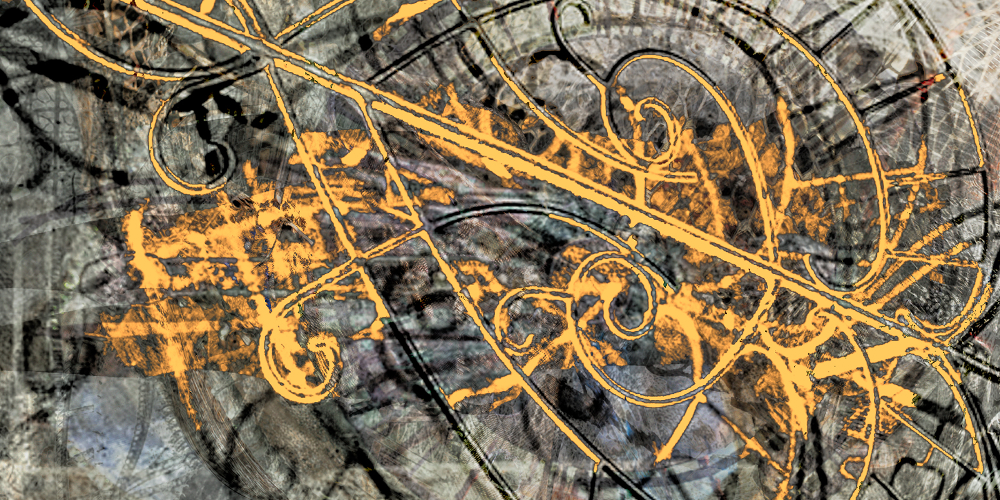
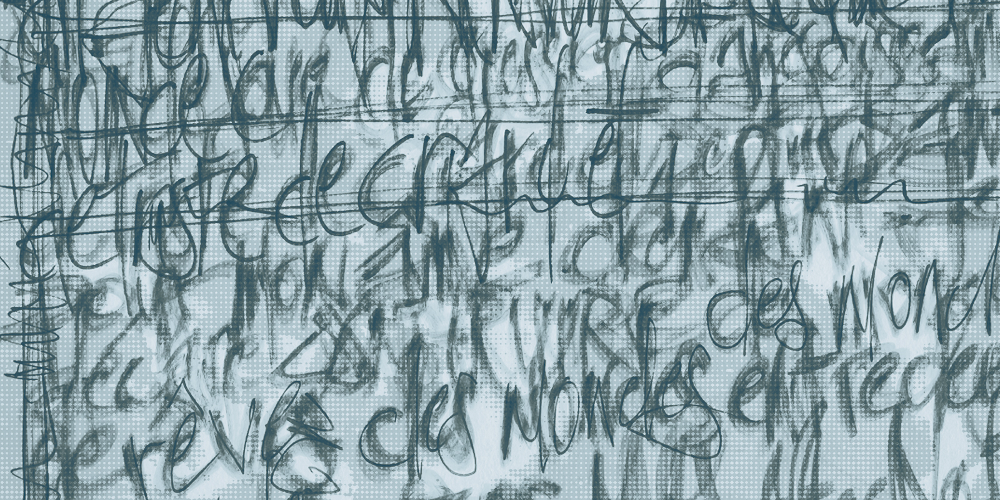

Sculptures, masques, parures, textes et dispositifs de présence.

Sculptures, masques, parures et dispositifs de présence
Le travail d’Alexis Tolmatchev se déploie à travers des formes conçues comme des seuils à activer. Masques, parures, objets et installations déplacent le regard, chargent la matière et ouvrent un autre régime de présence.
Voir les pièces
Contes, fragments, textes d’atelier et romans en cours
L’écriture accompagne le travail plastique comme un autre lieu de la forme. Elle rassemble contes, récits, journal d’atelier et recherches en cours, dans une langue de veille, de mémoire et de traversée.
Lire